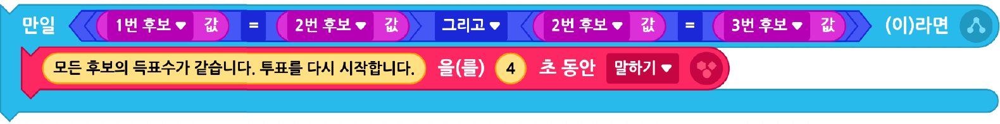

투표할 때 일어날 수 있는 다양한 상황에 대처하도록 프로그램을 수정·보완해 보자.
예
모두 무효표가 나오면 재투표를 실시한다.
[학생 (2)] 오브젝트의 블록 맨 밑에 다음 블록 추가하기
예
모든 후보의 득표수가 동일할 때 재투표를 실시한다.
[학생 (2)] 오브젝트의 맨 밑에 다음 블록 추가하기

화면의 크기를 좌우로 조절하면 블록을 크게 볼 수 있어요.
이전
다음